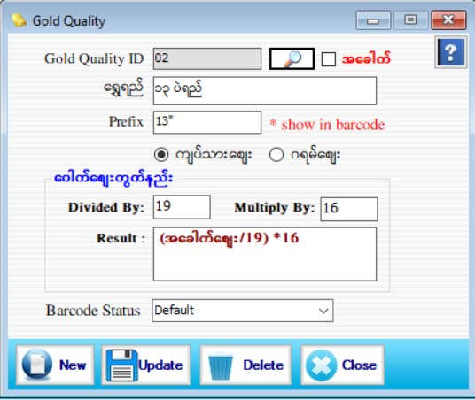

Gold Quality Setup

- Master Setup အောက်ရှိ Gold Quality Form ကိုနှိပ်ပါ။
- ရွှေရည်အမျိုးအစားကို သတ်မှတ်ပါ။ ရွှေရည်သည် ၁၆ပဲရည် ဖြစ်ပါက အခေါက် check box ကို အမှန်ခြစ်ခြစ်ပေးပါ။ ထိုသို့ အမှန်ခြစ် ပေးပါက အောက်တွင်ရှိသော ရွှေရည်ပေါက်စျေးတွက်နည်း text box တွေအကုန်လုံး မှိန်သွားမည်ဖြစ်သည်။
- * အခေါက်ဆိုလျှင် စျေးတွက်နည်း မလိုပါ။ *
- ၁၅ပဲရည်၊ ၁၄ပဲရည်၊ ၁၄ပဲ ၂ပြားရည်၊ ၁၃ပဲရည် စသည့် ရွှေရည်များအတွက် မိမိဆိုင် စျေးတွက်နည်း အတိုင်း သတ်မှတ်ထားနိုင်ပါသည်။ ထိုသို့ သတ်မှတ်ထားပါက ၁၆ပဲရည်(အခေါက်စျေး) တစ်မျိုးတည်းကို စျေးချိန်းလိုက်ပါက မိမိဆိုင် တွင် အသုံးပြုထားသော ရွှေရည်များတွင် Auto စျေးများပြောင်းလဲသွားမည်ဖြစ်ပါသည်။
- Gold Quality ID အား Software မှ Auto တပ်ပေးပါသည်။
- ရွှေရည်၊ Prefix တို့ကိုဖြည့်စွက်ပါ။ Gold Quality ၏ Prefix သည် Barcode တွင်ပြပေးမည်ဖြစ်သည်။ ဥပမာ- ရွှေရည်တွင် 15ပဲရည် ဟုထည့်ထားလျှင် Prefix တွင် 15P ဟုထည့်ပေးရမည်ဖြစ်သည်။ Gold Quality ၏ Prefix တွင် မိမိကြိုက်သလောက် Character ထည့်နိုင် ပါသည်။ ထို့နောက် Gram ချိန် (သို့) K/P/Y ချိန်ရွေးချယ်ရပါမည်။ မိမိရောင်းချမည့်ရွှေရည်သည် Gram ချိန်နှင့်ရောင်းပါက Gram ကိုရွေး၍ ကျပ်သား နှင့်ရောင်းချပါက K/P/Yကိုရွေးချယ်ရမည်ဖြစ်သည်။
- Barcode Status တွင် မိမိဆိုင်၌ ပေါလိုသော Barcode Design ကို ကျပ်ပဲရွေး သို့မဟုတ် ဂရမ်ချိန်ဖြင့် ပေါအောင် ရွေးချယ်နိုင်ပါသည်။ Default ကိုရွေးချယ်ထားပါက အထည်၏ ရွှေရည်ပေါမူတည်ပြီး ကျပ်ပဲရွေး သို့မဟုတ် ဂရမ်ချိန်ဖြင့် ပေါပေးမည်ဖြစ်သည်။
- Data များဖြည့်စွက်ပြီးပါက Save button ကိုနှိပ်ပြီးသိမ်းဆည်းရပါမည်။
- သိမ်းဆည်းပြီးသား Data များအား ပြန်လည်ကြည့်ခြင်း၊ ပြင်ဆင်ခြင်းများပြုလုပ်ချင်ပါက Gold Quality ID ၏ ဘေးတွင်ရှိသော မှန်ဘီလူး button ကိုနှိပ်ပြီးပြန်လည်ကြည့်ရှုပြင်ဆင်ချင်သော Gold Quality အား ရွေးချယ်ပြီး ပြင်နိုင်ပါသည်။
- သိမ်းဆည်းပြီးသား Data များကို ဖျက်လိုလျှင် မှန်ဘီလူး button အားနှိပ်ပြီးရှာပါ။ ထို့နောက် မိမိဖျက်လိုသော Data ကို Delete Button ကိုနှိပ်၍ ဖျက်နိုင်ပါသည်။
- ရွှေရည် အသစ်ထည့်လိုပါက New Button ကိုနှိပ်ပြီး အသစ်ထည့်နိုင်ပါသည်။
- Gold Quality Form အား အသုံးပြုပြီးပါက Close Button ကိုနှိပ်၍ ပိတ်နိုင်ပါသည်။